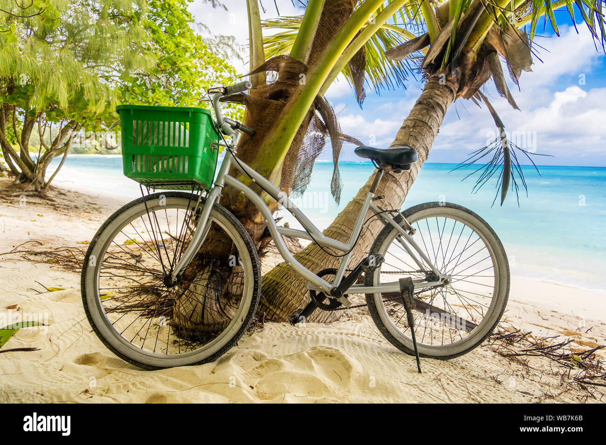

Home
Booking
Getting around Taniti:
What to Eat:
What to Do:
Public buses serve Taniti City and run from 5 a.m. to 11 p.m. every day. Private buses serve the rest of the island.
Taxis are available in Taniti City, and rental cars can be rented from a local rental agency near the airport.
Bikes and helmets are available to rent from several vendors (helmets are required by law).

Taniti City is fairly flat and very walkable. Many tourists stay in the area surrounding Merriton Landing: this area is easy to explore on foot.